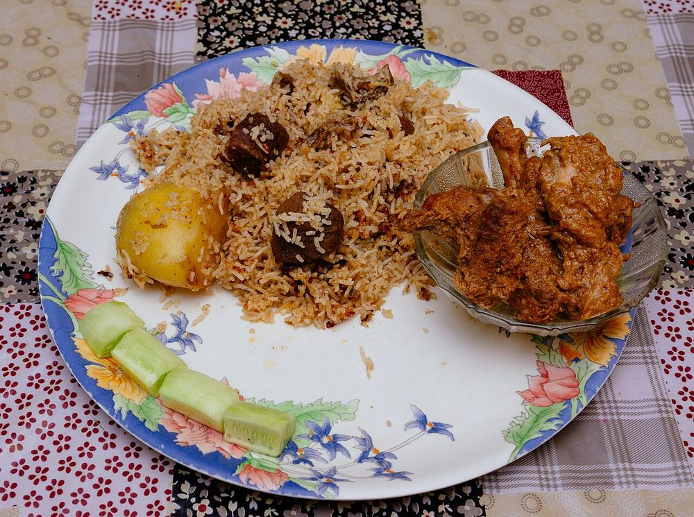

South India
Tamil Nadu Cuisine
Rice eaten in courses off a banana leaf, batter left overnight to sour, and a merchant community's freshly roasted masalas.
Rice eaten in courses off a banana leaf, batter left overnight to sour, and a merchant community's freshly roasted masalas.
The Tamil meal ("meals," on any Chennai board) arrives as a sequence, one thing at a time. A banana leaf goes down with its tip to the diner's left. Sides run along the top edge: pickle and salt at one end, then poriyal and kootu, a vadai or an appalam, and payasam if the day warrants it. Rice arrives in the middle, and it arrives three or four times. The first mound is eaten with a thick kuzhambu, sour with tamarind and heavy with gingelly oil. The second takes sambar, looser, so it soaks in. Then rasam, thin enough to drink, poured over a smaller mound. Curd rice closes the leaf.
The order is the point. Fat and sourness come first while appetite is strongest, a thin peppery broth follows to settle the stomach, and yogurt cools everything down at the end (a progression Tamil households still describe in the language of digestion. It also explains why individual dishes are calibrated the way they are: sambar is loosened to the consistency that wets rice best, vatha kuzhambu is dark and oily so that one spoonful flavours a whole handful, and rasam is deliberately watery. Coffee comes afterwards, on its own) decoction pushed slowly through a two-chambered steel filter, cut with hot milk and poured between tumbler and davara until it froths.
Tamil has one of the longest continuous written records of food anywhere in India. The Sangam corpus, composed roughly between 300 BCE and 300 CE, is love and war poetry, but it is thick with meals: rice cooked white and served with meat, toddy drunk from bamboo, ghee, curd, jackfruit and mango, fish dried on the shore. Its landscape scheme, the five tinai, sorts the country by what it eats. Millet and honey in the hills, milk and pulses in the forest, paddy and fish in the river plains, salt and dried fish on the coast, looted cattle in the parched land between. Much of that map still holds. The delta grows the rice, the dry inland belt lives on millets and preserved vegetables, and the Coromandel coast eats fish.
The other inheritance is arusuvai, the six tastes: inippu (sweet), pulippu (sour), uppu (salt), kaippu (bitter), kaaram (pungent) and thuvarppu (astringent). The framework comes out of Siddha medicine, and it is the reason a leaf carries things nobody eats for pleasure alone. Bitter gourd, neem flower in the Tamil New Year pachadi, the astringency of raw banana or a plain greens masiyal. Temple kitchens formalised the same instinct. The Iyengar and temple vegetarian tradition, which avoids onion and garlic, produced some of the state's most durable dishes as prasadam: puliyodarai, sakkarai pongal, ven pongal, distributed by the thousand at Srirangam and Tirupati and cooked at home more or less unchanged.
Idli and dosai rest on one technique: soak, grind, wait. Urad dal is wet-ground on its own until it whips up pale and stringy, parboiled rice is ground separately and coarser, and the two are folded together (roughly one part urad to three or four parts rice for idli, a little more rice and more water for dosai. A pinch of fenugreek helps. Left eight to twelve hours in a Tamil kitchen's ambient warmth, wild lactobacilli sour the batter while the urad's mucilage traps the gas they throw off, which is why an idli rises without any raising agent. The souring also breaks down phytates and makes the grain easier on the stomach) the reason idli is what gets fed to invalids and infants.
Nobody invented it. Fermented, steamed batter cakes appear under names like iddalige in Kannada writing from the tenth century onward1 and in Tamil texts of the same broad period, and by the twelfth century the technique is described plainly enough to recognise. The historian K.T. Achaya argued for an outside influence on the steaming step, from the Indonesian archipelago, though the case is circumstantial and contested. What is certain is the age: this is a pre-Columbian kitchen, older than the chilli, the potato and the tomato on the subcontinent. The potato inside a masala dosa is a twentieth-century addition, and it reached national menus largely through the Udupi hotel trade out of Karnataka.
Chettinad is not a district but a cluster of about seventy villages around Karaikudi, in the dry country of Sivagangai and Pudukkottai. Its people, the Nattukottai Chettiars, were bankers and traders who from the early nineteenth century financed rice mills, teak and moneylending across Burma, Ceylon, Malaya and Indochina, and brought the proceeds home to mansions of Burmese teak2, Belgian glass and Athangudi tile. The food came home with them. A community that dealt in cargo had unusual access to spice, a dry hinterland taught it to preserve, and enormous joint households meant cooking at scale.
The signature is procedural: the masala is dry-roasted and ground fresh for each dish, never spooned from a standing tin. Black pepper carries most of the heat. The older habit, from the centuries when pepper from the Kerala coast was the only real pungency available, and a different register from the chilli-forward cooking of Andhra. Fennel, star anise, marathi mokku and above all kalpasi, the stone flower lichen that tastes of little by itself but deepens everything around it, give the style its dark, resinous smell. Gingelly oil, sun-dried vathal and vadam, seeraga samba rice for biryani, and mutton, chicken, crab and fish in quantity complete it. It is the loudest Tamil sub-style, though hardly the only one: Madurai eats late and meaty, with kari dosai and paruthi paal from its night stalls, and the Kongunadu belt around Coimbatore and Erode cooks with less tamarind, more millet and coconut, and its own arisi paruppu sadam.


 Adai
Adai
 Adhirasam
Adhirasam
 Ambur Biryani
Ambur Biryani
 Beans Poriyal
Beans Poriyal
 Beetroot Poriyal
Beetroot Poriyal
 Bottle Gourd Kootu
Bottle Gourd Kootu
 Cabbage Poriyal
Cabbage Poriyal
 Chettinad Chicken Curry
Chettinad Chicken Curry
 Chettinad Eral Masala
Chettinad Eral Masala
 Chettinad Idiyappam
Chettinad Idiyappam
 Chettinad Kara Kuzhambu
Chettinad Kara Kuzhambu

Chettinad Kozhi Biryani Chettinad Meen Kuzhambu
Chettinad Meen Kuzhambu
 Chettinad Meen Varuval
Chettinad Meen Varuval
 Chettinad Muttai Masala
Chettinad Muttai Masala
 Chettinad Mutton Kuzhambu
Chettinad Mutton Kuzhambu
 Chettinad Nandu Masala
Chettinad Nandu Masala
 Chettinad Pepper Chicken
Chettinad Pepper Chicken
 Chettinad Urulai Roast
Chettinad Urulai Roast
 Coconut Chutney
Coconut Chutney
 Curd Rice
Curd Rice
 Dindigul Biryani
Idli
Dindigul Biryani
Idli
 Kandarappam
Kandarappam
 Kathirikai Chettinad
Kathirikai Chettinad
 Keerai Masiyal
Keerai Masiyal
 Kuzhi Paniyaram
Kuzhi Paniyaram
 Lemon Rice
Masala Dosa
Lemon Rice
Masala Dosa
 Medu Vada
Medu Vada
 Milagu Kuzhambu
Milagu Kuzhambu
 More Kuzhambu
More Kuzhambu
 Murukku
Murukku
 Mutton Chukka Varuval
Mutton Chukka Varuval
 Mutton Kola Urundai
Mutton Kola Urundai
 Nandu Rasam
Nandu Rasam
 Paal Paniyaram
Paal Paniyaram
 Paruppu Payasam
Paruppu Payasam
 Plain Dosa
Plain Dosa
 Puliyodarai
Puliyodarai
 Rasam
Rasam
 Rava Dosa
Rava Dosa
 Ribbon Pakoda
Ribbon Pakoda
 Sakkarai Pongal
Sambar
Sakkarai Pongal
Sambar
 Seedai
Seedai
 Thattai
Thattai
 Thayir Vadai
Thayir Vadai
 Thengai Sadam
Thengai Sadam
 Tomato Chutney
Tomato Chutney
 Upma
Upma
 Uttapam
Uttapam
 Vatha Kuzhambu
Vatha Kuzhambu
 Vellai Paniyaram
Vellai Paniyaram
 Ven Pongal
Ven Pongal
Not cooking tonight?
Tell us what is in your kitchen, and Khaana will help you cook an authentic Indian meal.